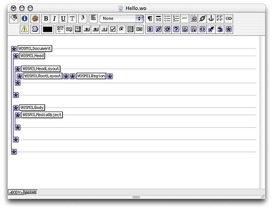
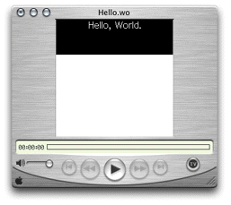

This section shows you how to create a simple SMIL presentation that includes a text media object.
To create a SMIL presentation, you start by creating a WebObjects Application project in Project Builder.
/System/Library/Frameworks/JavaWOSMIL.framework.Using a text editor, create a file containing the text "Hello,
World. " and save it as hello.txt in
your project directory (make sure that the string ends with a space
and a return character).
In Project Builder add hello.txt to
the Web Server Resources group.
hello.txt and
click Open.Add a new WebObjects component to the project.
Hello,
ensure the Application Server target is selected, and click Finish.Now prepare the component so that you can add SMIL elements to it.
Hello.wo in
the Groups & Files list to open the component in WebObjects Builder.Now you're ready to add the SMIL elements that will make up your presentation.
Figure 3-1 shows what the Hello.wo component
should look like when you're done.
Figure 3-1 Hello.wo component in WebObjects Builder
Finally, enter values for the bindings that provide information to your presentation viewer, such as the size of the window, the position of the regions within the window, and information on the media objects to be displayed.
"#FFFFFF" for
the bgcolor binding.200 for the height and width bindings.75 for the height binding.200 for the width binding.0 for the top and left bindings."Region1" for
the regionID binding."meet" for
the fit binding."hello.txt" for
the filename binding. "app" for
the framework binding."text" for
the mediaObjectName binding."Region1" for
the regionID binding.Now you're ready to test the application. To make things
easier, you should add two build settings to the project: WOPort and WOAutoOpenInBrowser.
-WOPort 1234 -WOAutoOpenInBrowser false
Build and run the application by choosing Build > Build and Run. Copy the application URL to the application from the run pane.
Now that the application is running, you're ready to view
the Hello presentation. Launch QuickTime Player, choose File >
Open URL, paste the application's URL in the text field of the
Open URL window, add /wo/Hello.wo to
it, and click OK. (This points your player to the SMIL component
you created in the previous sections instead of the default component, Main.wo.)
You should see a window similar to the one in Figure 3-2.
Figure 3-2 Hello presentation in QuickTime Player
This is the code your viewer receives:
<smil id="0.0">
<head id="0.0.1.0.0">
<layout id="0.0.1.0.0.1.0.0">
<root-layout background-color="#FFFFFF" skip-content="true"
width="200" height="200" id="0.0.1.0.0.1.0.0.1.0.0">
</root-layout>
<region z-index="0" skip-content="true" width="200" height="75"
left="0" fit="meet" top="0" id="Region1">
</region>
</layout>
</head>
<body id="0.0.1.1.0">
<text src="http://ebruce:1234/cgi-bin/WebObjects/Smile.woa/ wr?wodata=%2FUsers%2Fernest%2FWebObjects%2FProjects%2FSMIL%2FSmile%2Fhello.txt"
region="Region1" id="0.0.1.1.0.1.0.0">
</text>
</body>
</smil>
Notice that WebObjects generates id attributes
and their corresponding values for the SMIL tags so that you don't
have to come up with them. In some cases, however, you have to add
an elementID binding
to SMIL elements in WebObjects Builder. For example, event-based
presentations may require references between media objects. In that
case, you should add elementID bindings
with values that can be understood at a glance. See "Creating an Event-Based Presentation" for an example of this.